eisaCIM.Rmd
library(eisaCIM)
library(tidyverse)
#> ── Attaching packages ─────────────────────────────────────── tidyverse 1.3.1 ──
#> ✓ ggplot2 3.3.5 ✓ purrr 0.3.4
#> ✓ tibble 3.1.6 ✓ dplyr 1.0.7
#> ✓ tidyr 1.1.4 ✓ stringr 1.4.0
#> ✓ readr 2.1.0 ✓ forcats 0.5.1
#> ── Conflicts ────────────────────────────────────────── tidyverse_conflicts() ──
#> x dplyr::filter() masks stats::filter()
#> x dplyr::lag() masks stats::lag()
library(sessioninfo)As an example a mzML file (mammalian_cell_ref_original_Hilic_pos_F2_eisa_sim.mzML) is attached to this package.
mzml_file <- system.file("extdata", "mammalian_cell_ref_original_Hilic_pos_F2_eisa_sim.mzML",
package = "eisaCIM")Load the file.
raw_data <- read_files(files = mzml_file)We’ll have a look at cystine. First we’ll check which SIM traces are in the mzML file.
get_all_sim(data = raw_data)
#> sim
#> [1,] 105.000
#> [2,] 106.000
#> [3,] 114.000
#> [4,] 116.000
#> [5,] 118.000
#> [6,] 120.000
#> [7,] 122.000
#> [8,] 123.000
#> [9,] 132.000
#> [10,] 134.000
#> [11,] 136.000
#> [12,] 152.000
#> [13,] 182.000
#> [14,] 241.000
#> [15,] 44.000
#> [16,] 44.001
#> [17,] 55.000
#> [18,] 56.000
#> [19,] 59.000
#> [20,] 60.000
#> [21,] 69.000
#> [22,] 70.000
#> [23,] 72.000
#> [24,] 72.001
#> [25,] 74.000
#> [26,] 74.010
#> [27,] 86.000
#> [28,] 86.010
#> [29,] 87.000
#> [30,] 88.000
#> [31,] 88.010
#> [32,] 91.000For cystine we need the following traces:
| Index | SIM trace | Comment |
|---|---|---|
| 14 | 241 | Precursor |
| 12 | 152 | Fragment 1 |
| 6 | 120 | Fragment 2 |
| 25 | 74 | Fragment 3 |
The indexes is what we need to extract the sim data. We define a character vector for the SIM names and a numerical vector with the indexes of the SIM traces.
# define the name of the SIM traces
sim_names <- c("241", "152", "120", "74")
# the index of the SIM traces
sim_ids <- c(14, 12, 6, 25)
sim_data <- extract_sim_data(data = raw_data,
sim_names = sim_names,
sim_ids = sim_ids)Plot all the four SIM traces for cystine.
Show all four SIMs. Cystine elutes at 5.3 minutes.
plot_sims(sim_data,
rt_line = 5.3,
title = "SIM's of cystine")
Usin CentWave algorithm of xcms to find peaks. A noise level should be defined for each trace.
# define the noise level for each trace
noise <- c(1e6, 5e6, 5e6, 5e6)
# do the actual peak picking
my_peaks <- find_peaks(data = raw_data,
sim_ids = sim_ids,
sim_names = sim_names,
noise = noise)Plot boxes around the peaks which are detected with peak picking.
plot_sims(sim_data = sim_data,
rt_line = 5.3,
peak_data = my_peaks)
Group the peaks over the four traces. Group the peaks of the different traces if they are elute with a difference of smaller then 5 seconds.
my_peaks <- group_peaks(peak_list = my_peaks,
rt_diff = 5)Clean up the peak list, only keep a peak group if it has a peak in each trace.
Show the SIM’s in combination with the cleaned peak list.
plot_sims(sim_data = sim_data,
rt_line = 5.3,
peak_data = my_peaks_clean)
Next we create the CIM chromatogram.
plot_cim(sim_data = sim_data,
peak_list = my_peaks_clean,
select_sim = "241",
rt_line = 5.3)
The peak information for SIM trace 241.
my_peaks_clean %>%
filter(sim == "241")
#> # A tibble: 2 × 12
#> rt rtmin rtmax into intb maxo sn sim peak_group num_peaks min_rt
#> <dbl> <dbl> <dbl> <dbl> <dbl> <dbl> <dbl> <fct> <int> <int> <dbl>
#> 1 2.83 2.68 3.01 6.88e5 3.41e5 3.82e6 11 241 8 4 2.67
#> 2 5.32 5.17 5.46 7.04e6 6.71e6 9.66e7 443 241 19 4 5.17
#> # … with 1 more variable: max_rt <dbl>The meaning of the columns found in the XCMS package.
Calculate relative intensity for each peak group. The sum of the 4 peaks in the traces is 100%.
my_peaks_clean <- reconstruct_spectrum(my_peaks_clean)Reconstructed EISA fragmentation spectrum for cystine (retention time 5.3 minutes).
plot_reconstruct_spectrum(peak_list = my_peaks_clean,
peak_group = 19,
title = "Reconstructed EISA fragmentation spectrum",
subtitle = "Cystine")
session_info()
#> ─ Session info ──────────────────────────────────────────────────────────────
#> hash: broken heart, snowboarder, chess pawn
#>
#> setting value
#> version R version 4.1.2 (2021-11-01)
#> os Ubuntu 20.04.3 LTS
#> system x86_64, linux-gnu
#> ui X11
#> language en_GB
#> collate en_GB.UTF-8
#> ctype en_GB.UTF-8
#> tz Europe/Amsterdam
#> date 2021-11-23
#> pandoc 2.14.0.3 @ /usr/lib/rstudio/bin/pandoc/ (via rmarkdown)
#>
#> ─ Packages ───────────────────────────────────────────────────────────────────
#> package * version date (UTC) lib source
#> affy 1.70.0 2021-05-19 [2] Bioconductor
#> affyio 1.62.0 2021-05-19 [2] Bioconductor
#> assertthat 0.2.1 2019-03-21 [2] CRAN (R 4.1.0)
#> backports 1.3.0 2021-10-27 [2] CRAN (R 4.1.2)
#> Biobase 2.52.0 2021-05-19 [2] Bioconductor
#> BiocGenerics 0.38.0 2021-05-19 [2] Bioconductor
#> BiocManager 1.30.16 2021-06-15 [2] CRAN (R 4.1.0)
#> BiocParallel 1.26.2 2021-08-22 [2] Bioconductor
#> bitops 1.0-7 2021-04-24 [2] CRAN (R 4.1.0)
#> broom 0.7.10 2021-10-31 [2] CRAN (R 4.1.2)
#> bslib 0.3.1 2021-10-06 [2] CRAN (R 4.1.1)
#> cachem 1.0.6 2021-08-19 [2] CRAN (R 4.1.1)
#> cellranger 1.1.0 2016-07-27 [2] CRAN (R 4.1.0)
#> cli 3.1.0 2021-10-27 [2] CRAN (R 4.1.2)
#> clue 0.3-60 2021-10-11 [2] CRAN (R 4.1.1)
#> cluster 2.1.2 2021-04-17 [5] CRAN (R 4.0.5)
#> codetools 0.2-18 2020-11-04 [5] CRAN (R 4.0.3)
#> colorspace 2.0-2 2021-06-24 [2] CRAN (R 4.1.0)
#> crayon 1.4.2 2021-10-29 [2] CRAN (R 4.1.2)
#> DBI 1.1.1 2021-01-15 [2] CRAN (R 4.1.0)
#> dbplyr 2.1.1 2021-04-06 [2] CRAN (R 4.1.0)
#> DelayedArray 0.18.0 2021-05-19 [2] Bioconductor
#> DEoptimR 1.0-9 2021-05-24 [2] CRAN (R 4.1.0)
#> desc 1.4.0 2021-09-28 [2] CRAN (R 4.1.1)
#> digest 0.6.28 2021-09-23 [2] CRAN (R 4.1.1)
#> doParallel 1.0.16 2020-10-16 [2] CRAN (R 4.1.0)
#> dplyr * 1.0.7 2021-06-18 [2] CRAN (R 4.1.0)
#> eisaCIM * 0.4.3 2021-11-23 [1] local
#> ellipsis 0.3.2 2021-04-29 [2] CRAN (R 4.1.0)
#> evaluate 0.14 2019-05-28 [2] CRAN (R 4.1.0)
#> fansi 0.5.0 2021-05-25 [2] CRAN (R 4.1.0)
#> farver 2.1.0 2021-02-28 [2] CRAN (R 4.1.0)
#> fastmap 1.1.0 2021-01-25 [2] CRAN (R 4.1.0)
#> forcats * 0.5.1 2021-01-27 [2] CRAN (R 4.1.0)
#> foreach 1.5.1 2020-10-15 [2] CRAN (R 4.1.0)
#> fs 1.5.0 2020-07-31 [2] CRAN (R 4.1.0)
#> generics 0.1.1 2021-10-25 [2] CRAN (R 4.1.1)
#> GenomeInfoDb 1.28.4 2021-09-05 [2] Bioconductor
#> GenomeInfoDbData 1.2.6 2021-06-24 [2] Bioconductor
#> GenomicRanges 1.44.0 2021-05-19 [2] Bioconductor
#> ggforce 0.3.3 2021-03-05 [2] CRAN (R 4.1.0)
#> ggplot2 * 3.3.5 2021-06-25 [2] CRAN (R 4.1.0)
#> glue 1.5.0 2021-11-07 [2] CRAN (R 4.1.2)
#> gtable 0.3.0 2019-03-25 [2] CRAN (R 4.1.0)
#> haven 2.4.3 2021-08-04 [2] CRAN (R 4.1.0)
#> highr 0.9 2021-04-16 [2] CRAN (R 4.1.0)
#> hms 1.1.1 2021-09-26 [2] CRAN (R 4.1.1)
#> htmltools 0.5.2 2021-08-25 [2] CRAN (R 4.1.1)
#> httr 1.4.2 2020-07-20 [2] CRAN (R 4.1.0)
#> impute 1.66.0 2021-05-19 [2] Bioconductor
#> IRanges 2.26.0 2021-05-19 [2] Bioconductor
#> iterators 1.0.13 2020-10-15 [2] CRAN (R 4.1.0)
#> jquerylib 0.1.4 2021-04-26 [2] CRAN (R 4.1.0)
#> jsonlite 1.7.2 2020-12-09 [2] CRAN (R 4.1.0)
#> knitr 1.36 2021-09-29 [2] CRAN (R 4.1.1)
#> labeling 0.4.2 2020-10-20 [2] CRAN (R 4.1.0)
#> lattice 0.20-45 2021-09-22 [5] CRAN (R 4.1.1)
#> lifecycle 1.0.1 2021-09-24 [2] CRAN (R 4.1.1)
#> limma 3.48.3 2021-08-10 [2] Bioconductor
#> lubridate 1.8.0 2021-10-07 [2] CRAN (R 4.1.1)
#> magrittr 2.0.1 2020-11-17 [2] CRAN (R 4.1.0)
#> MALDIquant 1.20 2021-07-29 [2] CRAN (R 4.1.0)
#> MASS 7.3-54 2021-05-03 [5] CRAN (R 4.0.5)
#> MassSpecWavelet 1.58.0 2021-05-19 [2] Bioconductor
#> Matrix 1.3-4 2021-06-01 [5] CRAN (R 4.1.0)
#> MatrixGenerics 1.4.3 2021-08-26 [2] Bioconductor
#> matrixStats 0.61.0 2021-09-17 [2] CRAN (R 4.1.1)
#> memoise 2.0.0 2021-01-26 [2] CRAN (R 4.1.0)
#> modelr 0.1.8 2020-05-19 [2] CRAN (R 4.1.0)
#> MsCoreUtils 1.4.0 2021-05-19 [2] Bioconductor
#> MSnbase 2.18.0 2021-05-19 [2] Bioconductor
#> munsell 0.5.0 2018-06-12 [2] CRAN (R 4.1.0)
#> mzID 1.30.0 2021-05-19 [2] Bioconductor
#> mzR 2.26.1 2021-06-20 [2] Bioconductor
#> ncdf4 1.17.1 2021-11-06 [2] CRAN (R 4.1.2)
#> pcaMethods 1.84.0 2021-05-19 [2] Bioconductor
#> pillar 1.6.4 2021-10-18 [2] CRAN (R 4.1.1)
#> pkgconfig 2.0.3 2019-09-22 [2] CRAN (R 4.1.0)
#> pkgdown 1.6.1 2020-09-12 [2] CRAN (R 4.1.2)
#> plyr 1.8.6 2020-03-03 [2] CRAN (R 4.1.0)
#> polyclip 1.10-0 2019-03-14 [2] CRAN (R 4.1.0)
#> preprocessCore 1.54.0 2021-05-19 [2] Bioconductor
#> ProtGenerics 1.24.0 2021-05-19 [2] Bioconductor
#> purrr * 0.3.4 2020-04-17 [2] CRAN (R 4.1.0)
#> R6 2.5.1 2021-08-19 [2] CRAN (R 4.1.1)
#> ragg 1.2.0 2021-10-30 [2] CRAN (R 4.1.2)
#> RANN 2.6.1 2019-01-08 [2] CRAN (R 4.1.0)
#> RColorBrewer 1.1-2 2014-12-07 [2] CRAN (R 4.1.0)
#> Rcpp 1.0.7 2021-07-07 [2] CRAN (R 4.1.0)
#> RCurl 1.98-1.5 2021-09-17 [2] CRAN (R 4.1.1)
#> readr * 2.1.0 2021-11-11 [2] CRAN (R 4.1.2)
#> readxl 1.3.1 2019-03-13 [2] CRAN (R 4.1.0)
#> reprex 2.0.1 2021-08-05 [2] CRAN (R 4.1.0)
#> rlang 0.4.12 2021-10-18 [2] CRAN (R 4.1.1)
#> rmarkdown 2.11 2021-09-14 [2] CRAN (R 4.1.1)
#> robustbase 0.93-9 2021-09-27 [2] CRAN (R 4.1.1)
#> rprojroot 2.0.2 2020-11-15 [2] CRAN (R 4.1.0)
#> rstudioapi 0.13 2020-11-12 [2] CRAN (R 4.1.0)
#> rvest 1.0.2 2021-10-16 [2] CRAN (R 4.1.1)
#> S4Vectors 0.30.2 2021-10-03 [2] Bioconductor
#> sass 0.4.0 2021-05-12 [2] CRAN (R 4.1.0)
#> scales 1.1.1 2020-05-11 [2] CRAN (R 4.1.0)
#> sessioninfo * 1.2.1 2021-11-02 [2] CRAN (R 4.1.2)
#> stringi 1.7.5 2021-10-04 [2] CRAN (R 4.1.1)
#> stringr * 1.4.0 2019-02-10 [2] CRAN (R 4.1.0)
#> SummarizedExperiment 1.22.0 2021-05-19 [2] Bioconductor
#> systemfonts 1.0.3 2021-10-13 [2] CRAN (R 4.1.1)
#> textshaping 0.3.6 2021-10-13 [2] CRAN (R 4.1.2)
#> tibble * 3.1.6 2021-11-07 [2] CRAN (R 4.1.2)
#> tidyr * 1.1.4 2021-09-27 [2] CRAN (R 4.1.1)
#> tidyselect 1.1.1 2021-04-30 [2] CRAN (R 4.1.0)
#> tidyverse * 1.3.1 2021-04-15 [2] CRAN (R 4.1.0)
#> tweenr 1.0.2 2021-03-23 [2] CRAN (R 4.1.0)
#> tzdb 0.2.0 2021-10-27 [2] CRAN (R 4.1.2)
#> utf8 1.2.2 2021-07-24 [2] CRAN (R 4.1.0)
#> vctrs 0.3.8 2021-04-29 [2] CRAN (R 4.1.0)
#> vsn 3.60.0 2021-05-19 [2] Bioconductor
#> withr 2.4.2 2021-04-18 [2] CRAN (R 4.1.0)
#> xcms 3.14.1 2021-07-27 [2] Bioconductor
#> xfun 0.28 2021-11-04 [2] CRAN (R 4.1.2)
#> XML 3.99-0.8 2021-09-17 [2] CRAN (R 4.1.1)
#> xml2 1.3.2 2020-04-23 [2] CRAN (R 4.1.0)
#> XVector 0.32.0 2021-05-19 [2] Bioconductor
#> yaml 2.2.1 2020-02-01 [2] CRAN (R 4.1.0)
#> zlibbioc 1.38.0 2021-05-19 [2] Bioconductor
#>
#> [1] /tmp/Rtmpl2tIvE/temp_libpath17e42b63d2ac
#> [2] /home/ricoderks/R/x86_64-pc-linux-gnu-library/4.1
#> [3] /usr/local/lib/R/site-library
#> [4] /usr/lib/R/site-library
#> [5] /usr/lib/R/library
#>
#> ──────────────────────────────────────────────────────────────────────────────